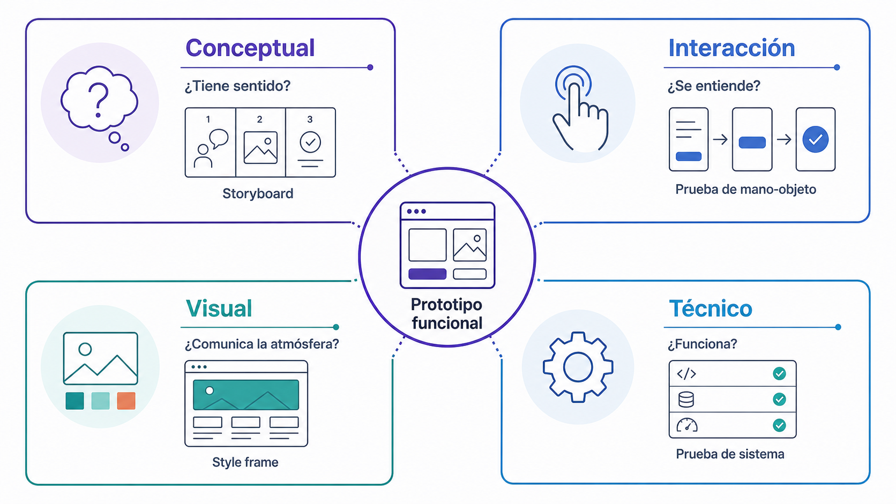
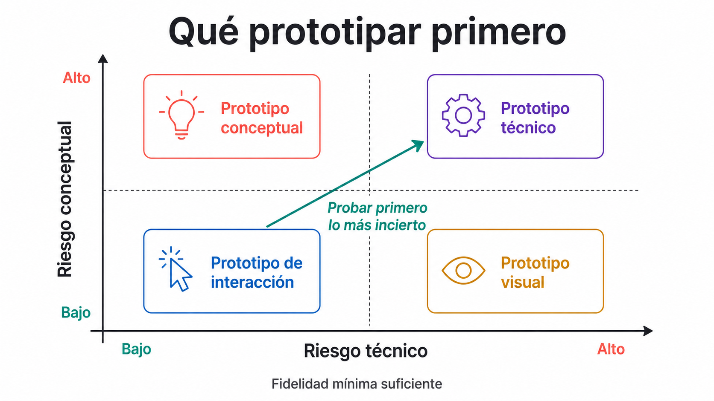
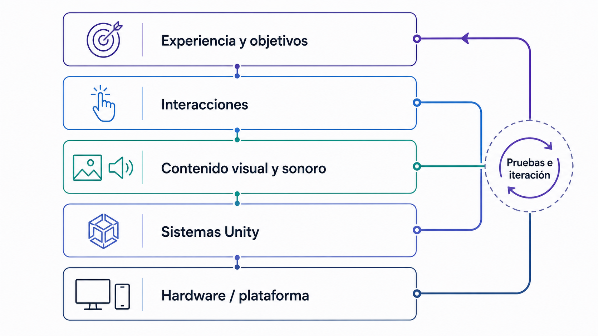
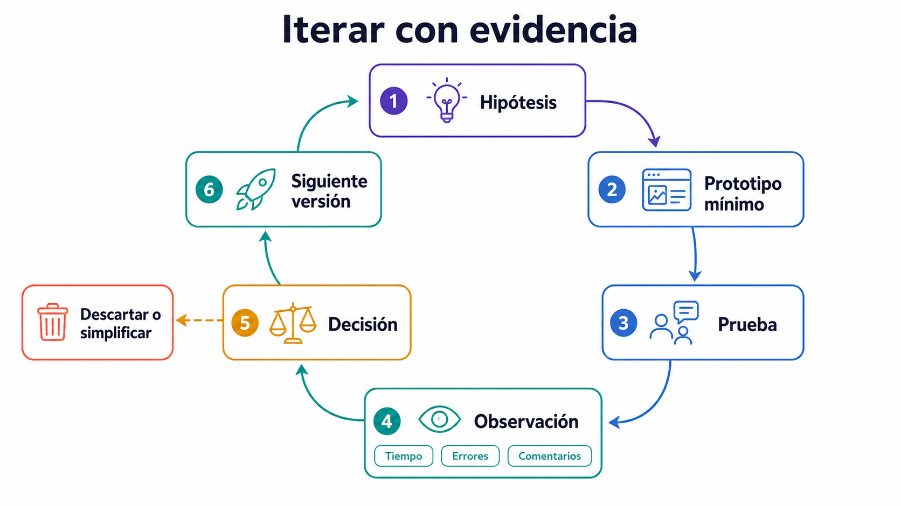

Tecnología, prototipado y arquitectura del proyecto
Decidir como diseño, no como cierre: tipos de prototipo, mapa técnico y planificación realista.
Objetivos de aprendizaje
Tratar las decisiones técnicas como decisiones de diseño.
Diferenciar y planificar prototipos conceptuales, de interacción, visuales y técnicos.
Construir un mapa técnico realista del proyecto.
Conceptos clave
Decisión técnica como decisión de diseñoPrototipo conceptualPrototipo de interacciónPrototipo visualPrototipo técnicoArquitectura del proyectoUser testingIteración
Introducción
Esta séptima clase se centra en la relación entre decisiones técnicas, decisiones de diseño y planificación realista del proyecto. Elegir VR, AR, mandos, seguimiento de manos, UI espacial, sonido 3D, WebGL, Android, DOTS o una escena simple con GameObjects afecta directamente al lenguaje, al ritmo, a la accesibilidad y al alcance del proyecto. La clase introduce los principales tipos de prototipo —conceptual, de interacción, visual y técnico— como herramientas para aprender rápido, detectar problemas y tomar decisiones. También se trabaja la arquitectura del proyecto (escenas, prefabs, scripts, eventos, assets, sistemas, materiales, audio y documentación) y la importancia del user testing temprano: probar con un compañero, observar dónde se pierde, qué no entiende y qué sí funciona puede ahorrar semanas de trabajo.
Conceptos en detalle
Decisión técnica como decisión de diseño
Una decisión técnica no es neutra: elegir una tecnología, dispositivo, sistema de input o forma de locomoción cambia la experiencia que se puede diseñar. La pregunta no es solo qué tecnología puedo usar, sino qué experiencia quiero producir y qué tecnología la hace posible sin romper el alcance del proyecto.
Hand tracking en lugar de mandos cambia el tipo de gestos disponibles.
Teleportación en lugar de movimiento continuo cambia el ritmo de exploración.
AR en lugar de VR cambia la relación con el espacio físico.
WebGL limita capacidades XR pero facilita compartir el proyecto.
DOTS puede mejorar rendimiento en sistemas masivos a costa de complejidad.
Prototipo conceptual
Valida la idea general del proyecto: tema, tono, papel del usuario y por qué la experiencia debe ser inmersiva. No necesita resolver aún la tecnología.
Texto descriptivo de la experiencia.
Storyboard o mapa de experiencia.
Moodboard y referentes comentados.
Diagrama o pequeña maqueta visual.
Prototipo de interacción
Valida si una acción se entiende y se siente bien: si el usuario comprende qué puede hacer, si el respuesta es claro y si la mecánica tiene sentido.
Probar coger un objeto y colocarlo en un soporte antes de construir el mundo narrativo.
Comparar interacción directa, con rayo, con mirada o mediante UI.
Testear comodidad y claridad del respuesta.
Prototipo visual
Valida estilo, atmósfera y dirección estética: paleta, materiales, iluminación, nivel de detalle viable y legibilidad de la escena.
Sala de prueba con materiales clave.
Objeto representativo del estilo.
Setup de iluminación o composición.
Captura de estilo para fijar la dirección.
Prototipo técnico
Valida la viabilidad de una función: si Unity puede hacerlo, si funciona en el dispositivo objetivo, si el rendimiento es suficiente y si el build se sostiene. No necesita ser bonito; debe demostrar que algo funciona.
Build mínimo en Android o WebGL.
Escena AR detectando planos.
Sistema de interacción aislado.
Prueba puntual de DOTS en un sistema concreto.
Arquitectura del proyecto
Forma en que se organiza técnica y conceptualmente el trabajo: escenas, prefabs, scripts, managers, eventos, materiales, assets, audio, UI, sistemas de interacción, carpetas, nomenclatura, documentación, builds y testing. Una buena arquitectura permite cambiar cosas sin romper todo.
Prefabs con prefijos PFB_INT_, PFB_UI_, PFB_ENV_, PFB_FX_.
Escenas nombradas por propósito: Test_XR_01, Prototipo_v1, DOTS_demo.
User testing
Observar cómo una persona usa la experiencia. No se trata de preguntarle si le gusta, sino de ver si entiende, se orienta, actúa y recibe respuesta de forma clara.
Un compañero prueba la escena 5 minutos mientras el diseñador observa en silencio.
Registrar dónde mira, dónde se pierde y qué intenta hacer.
Detectar qué le incomoda y qué parte genera interés.
Iteración
Ciclo continuo de prueba, análisis y mejora: diseñar → prototipar → probar → observar → corregir → volver a probar. Un proyecto inmersivo evoluciona mediante decisiones sucesivas, no se resuelve de una vez.
Versionar escenas (Prototipo_v1, v2, v3) tras cada test.
Registrar problemas detectados y decisiones tomadas.
Descartar funciones tras observar que no aportan a la experiencia.
La tecnología no se elige al final
En muchos proyectos se piensa primero la idea y después se decide la tecnología. En experiencias inmersivas esta separación es problemática: no es lo mismo caminar físicamente por una sala, mirar una pieza a través del móvil, ponerse un visor VR, usar las manos sin mandos, seleccionar con un rayo o interactuar desde WebGL. Hand tracking aporta corporalidad pero pierde precisión; interacción mediante rayo gana alcance pero pierde fisicalidad; AR móvil deja entrar el entorno real; WebGL facilita compartir pero limita XR. La decisión técnica define el lenguaje del proyecto.
Prototipar no es hacer una versión fea del proyecto final
Un prototipo no debe intentar resolverlo todo: debe responder una pregunta concreta. En lugar de hacer una versión pequeña de todo, conviene comprobar si el usuario entiende que debe coger un objeto y colocarlo en un soporte, si la escena soporta 30 objetos interactivos sin perder rendimiento, o si el tono visual funciona con luz baja y audio espacial. Un prototipo útil es específico, barato y rápido de modificar.
Cada tipo de prototipo responde una pregunta distinta
Conceptual: ¿la idea tiene sentido? → concepto, tono, objetivo, referentes. Interacción: ¿la acción funciona y se entiende? → mecánica probada. Visual: ¿la atmósfera funciona? → estilo visual y sonoro inicial. Técnico: ¿es viable técnicamente? → función demostrada. Un proyecto sólido suele necesitar los cuatro, aunque sean simples.

Figura 3.7 — Tipos de prototipo y preguntas que permiten responder.
Alcance: el enemigo invisible del proyecto
Uno de los principales riesgos en proyectos inmersivos es el exceso de alcance. Intentar un mundo abierto VR con narrativa ramificada, NPCs, multijugador, seguimiento de manos, AR y generación procedural suele ser inviable en un curso. Un alcance razonable: una sala inmersiva con tres objetos interactivos, una secuencia narrativa, audio espacial, UI en mundo y un build funcional. La calidad no depende de la cantidad de sistemas, sino de la coherencia entre idea, interacción y ejecución.
Riesgo técnico y riesgo conceptual
Todo proyecto tiene riesgos y conviene distinguirlos. Riesgo técnico: el visor no detecta manos de forma estable, la escena no compila en Android, el rendimiento cae, AR no detecta planos, el sistema de interacción falla, WebGL no soporta una función esperada. Riesgo conceptual: el usuario no entiende qué debe hacer, la narrativa no se percibe, el objeto interactivo no tiene sentido, la experiencia parece una demo técnica, la estética no comunica el tono, la interacción no aporta significado. Un buen proyecto gestiona ambos.

Figura 3.19 — Selección del prototipo según el riesgo que debe resolverse primero.
Arquitectura: ordenar para poder pensar
Una mala organización puede bloquear el avance. Una arquitectura mínima debe responder: qué escenas existen, qué prefabs son reutilizables, qué scripts controlan la lógica, dónde están los assets, cómo se nombran los objetos, qué eventos conectan la experiencia y dónde se documenta. Ordenar el proyecto no es una tarea administrativa: es parte del diseño.

Figura 3.8 — Arquitectura por capas de una experiencia inmersiva.
Escenas, prefabs y sistemas
Estructura sencilla: Scenes/ con Test_XR_01, Test_XR_02, Test_XR_03, AR_01, Prototipo_v1, DOTS_demo. Prefabs/ con PFB_INT_ActivationObject, PFB_INT_GrabObject, PFB_UI_InfoPanel, PFB_ENV_Prop, PFB_FX_Projection. Scripts/ organizado en Interaction/, UI/, Audio/, Managers/, AR/, DOTS/. Este tipo de organización permite que el proyecto crezca sin perder claridad.
User testing temprano
Probar tarde suele revelar problemas cuando ya no hay tiempo de corregirlos. Un test temprano puede detectar falta de comprensión, problemas de escala, mal posicionamiento, interacción confusa, UI ilegible, audio molesto, locomoción incómoda, falta de respuesta o secuencia poco clara. El diseñador no debe explicar demasiado durante el test: si tiene que explicar continuamente, la experiencia no comunica por sí misma.

Figura 3.20 — Ciclo de iteración guiado por evidencia de usuarios.
Tipologías
Mapa técnico — estructura mínima
Ficha para visualizar qué necesita el proyecto y qué riesgos contiene. Debe incluir título, tipo de experiencia (VR/AR/MR/WebGL/instalación/híbrida), escena principal y secundarias, interacciones principales, assets, sistemas técnicos, scripts, prefabs, audio, UI, build objetivo, riesgos técnicos y conceptuales, plan de testing, prioridades y elementos descartables.
Series de publicaciones donde un equipo documenta el desarrollo de un proyecto XR, incluyendo iteraciones de input, comodidad, optimización y narrativa.
UI necesaria y build objetivo (PC, Android, WebGL, Quest).
Riesgos técnicos y conceptuales identificados.
Plan de testing mínimo.
Clasificar elementos en imprescindibles, importantes y deseables.
¿Qué construyo primero?
¿Qué descarto si falta tiempo?
¿Mis riesgos son asumibles?
Ejercicio 2 — Cuatro prototipos, cuatro preguntas
Actividad central · 23 min · Ejercicio
Definir cuatro prototipos (conceptual, interacción, visual, técnico) para el mismo proyecto en formato de tabla.
Indicar para cada tipo la pregunta que responde.
Describir qué se construye en cada prototipo.
Definir qué se mide u observa en cada uno.
¿Qué puedes probar sin abrir Unity?
¿Qué necesitas probar dentro de Unity?
¿Qué prototipo debería hacerse primero?
¿Cuál es el más arriesgado?
¿Cuál podría descartarse si falta tiempo?
Actividades de ampliación opcional · fuera de la sesión
Ejercicio 3 — Matriz de decisiones técnicas
Ampliación opcional · 20 min · Ejercicio
Elegir tres decisiones técnicas del proyecto y analizar su impacto en una matriz comparativa.
Decisiones posibles: seguimiento de manos vs mandos, teleportación vs movimiento continuo, VR vs AR, URP vs HDRP, WebGL vs PC, objeto físico vs virtual, UI espacial vs diegética, audio estéreo vs espacial.
Para cada decisión, comparar opción A y opción B.
Anotar impacto en diseño y riesgo.
Tomar una decisión final justificada.
¿Qué opción mejora la experiencia?
¿Qué opción reduce riesgo?
¿Qué opción es más accesible?
¿Qué opción es viable en el tiempo disponible?
¿Qué opción define mejor el lenguaje del proyecto?
Ejercicio 4 — Arquitectura de carpetas y escenas
Ampliación opcional · 20 min · Ejercicio
Diseñar la estructura de carpetas de un proyecto Unity propio antes de seguir produciendo contenido.
Definir nombre de la escena principal, la de pruebas y la final.
Listar prefabs y scripts principales.
Definir carpeta de documentación.
¿La nomenclatura es coherente?
¿Un compañero podría entender la estructura sin explicación?
Ejercicio 5 — Plan mínimo de testing
Ampliación opcional · 20 min · Ejercicio
Diseñar un test de usuario mínimo para un prototipo. Durante el test, no explicar demasiado: observar primero. Si el usuario no entiende algo, eso es información valiosa.
Objetivo del test: qué quiero comprobar.
Participantes y duración.
Tarea concreta del usuario.
Tres aspectos a observar.
Tres preguntas posteriores.
Datos a registrar: errores, dudas, tiempo, comentarios, incomodidad, partes claras.
Qué cambiaré si falla.
¿Qué quiero aprender exactamente?
¿Cómo registro lo observado sin interrumpir?
¿Qué cambiaría si el test revela un problema grave?
Investigación aplicada
Ampliación opcional · fuera de la sesión
Estudiar un postmortem, devblog, entrevista técnica o documentación pública de un proyecto VR/XR, videojuego o instalación interactiva. Trabajo autónomo fuera de clase, útil para la Tarea 3 y el Design Dossier.
¿Qué parte del proyecto cambió durante el desarrollo?
¿Qué decisión técnica afectó al lenguaje de la experiencia?
¿Qué problema apareció durante el testing?
¿Qué se eliminó para cerrar el proyecto?
¿Qué harías distinto en tu propio proyecto?
Conexión con Unity
Ejercicio puente con el Laboratorio 5: traducir el mapa técnico del proyecto a una planificación concreta en Unity, definiendo jerarquía, prefabs, scripts, eventos, build objetivo, primer test y riesgo principal.
Riesgo: Que el usuario no entienda dónde colocar el objeto.
Elemento descartable: Partículas decorativas.
Reflexión
Glosario de la lección
Prefab
Objeto reutilizable de Unity que guarda una configuración de GameObjects y componentes para instanciarla o repetirla en distintas escenas.
Component
Unidad funcional que se añade a un GameObject en Unity. Puede controlar renderizado, física, audio, interacción, scripts u otros comportamientos.
Design Dossier
Documento de diseño que reúne concepto, referentes, narrativa, interacción, arquitectura técnica, prototipos, decisiones, planificación y evolución del proyecto.
Prototipo conceptual
Prototipo que valida la idea, intención, tono y marco conceptual del proyecto.
Prototipo de interacción
Prototipo que valida si una acción o mecánica se entiende, se siente bien y produce respuesta adecuado.
Prototipo visual
Prototipo que valida estilo, atmósfera, materiales, iluminación y dirección estética.
Prototipo técnico
Prototipo que valida si una función es viable técnicamente.
Arquitectura del proyecto
Organización de escenas, prefabs, scripts, assets, eventos, carpetas y sistemas técnicos.
User testing
Prueba con usuarios para observar comprensión, usabilidad, confort, interés y problemas de la experiencia.
Iteración
Proceso continuo de diseñar, probar, observar, corregir y volver a probar.
Finalización de la sesión
Confirma cuando hayas completado la actividad central
La visita a la página se registra como progreso de lectura. Esta confirmación registra la sesión como completada.